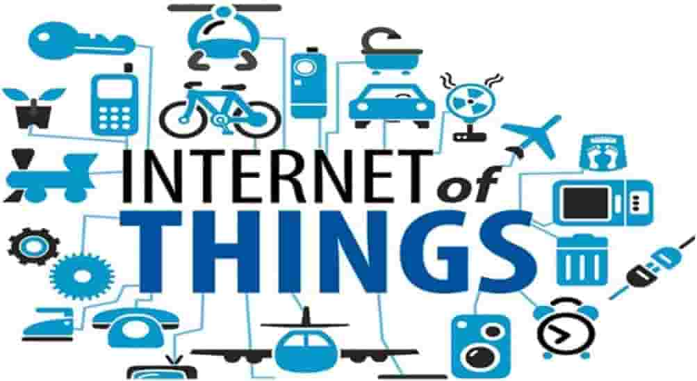

Что такое "Интернет вещей"/"Internet of Things"
Интернет вещей (англ. internet of things, IoT) — концепция вычислительной сети физических предметов («вещей»), оснащённых встроенными технологиями для взаимодействия друг с другом или с внешней средой, рассматривающая организацию таких сетей как явление, способное перестроить экономические и общественные процессы, исключающее из части действий и операций необходимость участия человека. 
Концепция сформулирована в 1999 году как осмысление перспектив широкого применения средств радиочастотной идентификации для взаимодействия физических предметов между собой и с внешним окружением. Наполнение концепции многообразным технологическим содержанием и внедрение практических решений для её реализации начиная с 2010-х годов считается устойчивой тенденцией в информационных технологиях, прежде всего, благодаря повсеместному распространению беспроводных сетей, появлению облачных вычислений, развитию технологий межмашинного взаимодействия, началу активного перехода на IPv6 и освоению программно-определяемых сетей.
Где используется интернет вещей?
Быт.
Телевизор, холодильник, принтер и вся система «умный дом» могут быть доведены до полной автоматизации. С подключением IoT человек избавится от навязчивых мыслей (не забыл ли он закрыть дверь или выключить плиту) – всю информацию можно будет увидеть в смартфоне и дистанционно запустить незавершенный алгоритм. А «умный» пылесос оповестит о найденной золотой сережке, которая закатилась за кресло.
Безопасность.
Внедрение IoT-технологии в охранную систему позволит сканировать и отправлять фото- и видеоданные, а искусственный интеллект будет способен запоминать и распознавать людей.Промышленность. Производство станет автоматизированным: системы мониторинга оповестят о возможных проблемах и сбоях в работе оборудования, а клиент сможет выполнить заказ удаленно.
Медицина.
Интернет вещей нужен для того, чтобы персонализировать устройства, помогающие изучать и контролировать жизненные показатели человека, а при необходимости вызвать врача.
Транспорт.
В мире интернета вещей не будет пробок – сеть датчиков и сенсоров распознает загруженность и оптимизирует работу транспортных каналов. Ритейл. Обычные магазины снова станут конкурировать с онлайн-бутиками – будут налажены автоматическая передача и анализ информации о клиенте через POS-терминал.